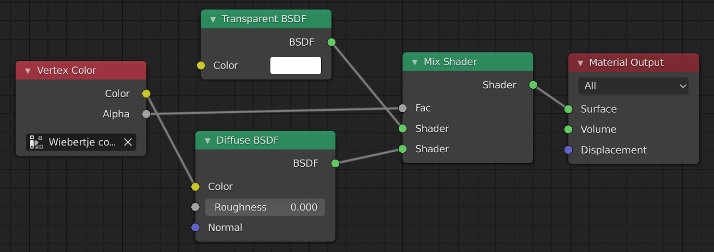

Introduction
by Johan Hidding
This code provides an embedded language within Python to program shaders in Blender. While this goal is very specific, the technique used is Universal.
I believe it always a good idea to start a programming story with a morale citing Structure and Interpretation of Computer Programs. In programming any language there are three important questions:
- What are the primitives?
- What are the means of combination?
- What are the means of abstraction?
In Python all three of these questions have very long answers. The primitives are extensive, thanks to the batteries included philosophy. The means of combination are plenty, depending on the chosen abstraction: classes can inherit and be composed, function can be composed. The ultimate abstraction however, is to develop a new language. That sounds like a big deal, and it is. However, it need not be a lot of work if we reuse everything Python already offers. After all, code is data.
We develop an embedded domain specific language in Python. There are very many potential applications for this technique: it is what underlies Dask's delayed functions and Vaex's expressions. In this instance we'll develop a means to script shaders in Blender. Blender has an extensive system of shaders and transformers to express material properties of a 3D scene. Shaders are composable in a graphical node editor:

In addition to the node editor, Blender is completely scriptable with Python. The following code creates a material with two nodes and one link.
# create a material
mat = bpy.data.materials.new("my material")
mat.use_nodes = True
# clear default nodes
nodes = mat.node_tree.nodes
nodes.clear()
# add new nodes
shader = nodes.new(type='ShaderNodeBsdfDiffuse')
node_output = nodes.new(type='ShaderNodeOutputMaterial')
# add a link
links = mat.node_tree.links
links.new(shader.outputs[0], node_output.inputs[0])The downside of this API is that it is a bit explicit in the construction of the node graph. Wouldn't it be nice if we could write a shader in a way more suitable to a an actual programming language? In an attempt at wishful programming, we can express the shader shown in the previous image as follows:
color_input = VertexColor(layer_name="color layer")
transparent = BsdfTransparent(color=Value((1,1,1,1)))
diffuse = BsdfDiffuse(color=color_input.color)
mix = MixShader(color_input.alpha, transparent.BSDF, diffuse.BSDF)
output_material = OutputMaterial(surface=mix.shader)Each node in the graph is a function call, each link is an argument. This code completely captures the semantics of the graph shown above. I don't know if I'm crazy, but I get very happy if code can be expressed more effectively like this. The question is: how can we make this work?
The source code of this module is completely literate, meaning that the entire code is contained in this documentation. Code blocks that are part of the source code are named with "«graph»" identifiers. These names may appear in other code blocks in the form of <<graph>> references. The resulting code is a single file Python module.